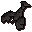

Raw lobster
| Config name | raw_lobster |
| Item id | 377 |
| Value | 150 gp |
| Weight | 400g |
| Members | No |
| Tradeable | Yes |
| Stackable | No |
| Defined in | scripts/skill_fishing/configs/fishing.obj |
Raw lobster
I should try cooking this.
Used to make
| Skill | Level | XP | Ingredients | Tool | How | Where | Makes |
|---|---|---|---|---|---|---|---|
| Cooking | 40 | 120.0 | use on object | range or fire | Lobster can spoil into  Burnt lobster |
Sold at
| Shop | Shopkeeper | Stock |
|---|---|---|
| Harrys Fishing Shop. | 0 | |
| Gerrant's Fishy Business. | 0 | |
| Fishing Guild Shop. | 0 |
Fishing
Level 40 with  Lobster pot, 90.0 xp. Caught at:
Lobster pot, 90.0 xp. Caught at:  Fishing spot (2 spawns),
Fishing spot (2 spawns),  Fishing spot (11 spawns),
Fishing spot (11 spawns),  Fishing spot (3 spawns)
Fishing spot (3 spawns)
Referenced in scripts
scripts/_test/scripts/cheats/cheat_bank.rs2scripts/levelup/scripts/levelup_unlocks_fishing.rs2scripts/minigames/game_trawler/scripts/trawler_win.rs2scripts/skill_fishing/scripts/fishing_spots/rarefish.rs2